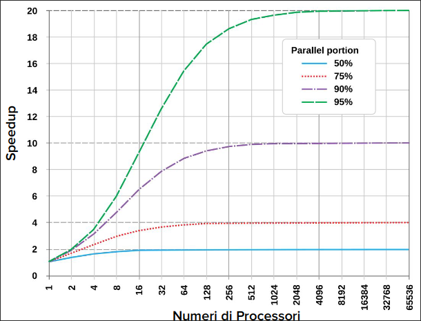
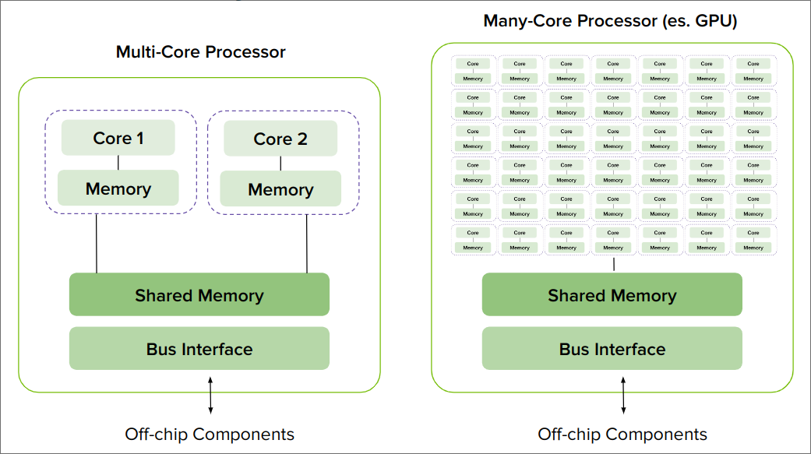
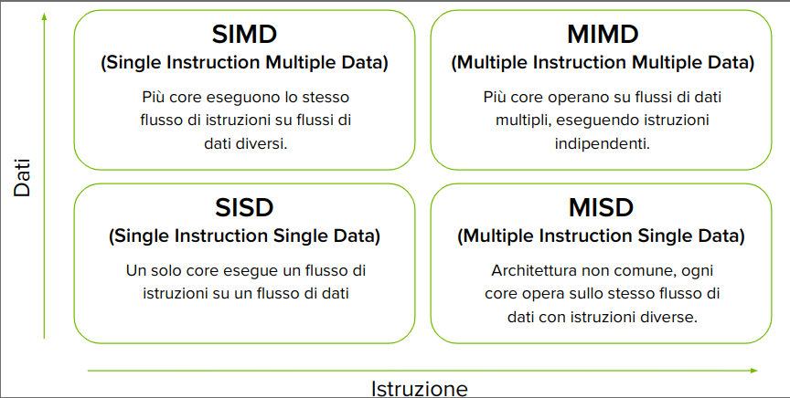

Introduzione
Info esame
Consultabili nelle prime 9 slide del file 0.0 Introduzione.pdf
Il Progresso delle CPU e la Necessità di Calcolo Parallelo
- Origini dell'informatica
- la ricerca di velocità nel calcolo ha guidato lo sviluppo fino dagli albori.
- legge di Moore: previsione dell'aumento esponenziale della potenza di calcolo.
- Crescita dei Dati e Complessità
- Complessità crescente dei problemi da risolvere (es. simulazioni, analisi dati).
- Limite delle architetture sequenziali tradizionali sempre più evidenti.
- Transizione verso Architetture Avanzate
- Adozione di sistemi multi-core per superare i limiti della frequenza di clock.
- Utilizzo di GPU per calcoli massivamente paralleli.
- Calcolo ad Alte Prestazioni (HPC)
- Supercomputer e cluster per affrontare problemi scientifici complessi.
- Integrazione di tecnologie diverse (CPU, GPU, FPGA) per massimizzare le prestazioni.
- Intelligenza Artificiale e Big Data
- Deep Learning e Machine Learning richiedono enormi capacità di calcolo.
- il calcolo parallelo diventa imprescindibile per addestrare modelli AI complessi.
Legge di Moore
Il numero di transistor su un circuito integrato raddoppia ogni due anni con un aumento minimo dei costi.

L'evoluzione dei Microprocessori
Mentre il numero di transistor e le prestazioni sono cresciuti esponenzialmente, la frequenza di clock e il consumo energetico hanno raggiunto un plateau, portando all'era del multi-core per continuare l'avanzamento delle prestazioni.

Limiti strutturali delle CPU
Obiettivi degli Avanzamenti Architetturali nei Computer
- Ridurre la latenza (Latency)
- Tempo necessario per completare un'operazione (nano secondi o micro secondi).
- Aumentare la larghezza di banda (Bandwidth)
- Quantità di dati che possono essere trasferiti in un'unità di tempo (MB/s GB/s Tbps).
- Aumentare il Throughput
- Numero di operazioni che possono essere completate in un'unità di tempo (MFLOPS o GFLOPS).
FLOPs: Floating Point Operations per Second
Computazione Parallela
L'interesse per la computazione parallela è cresciuto puntando a migliorare la velocità di calcolo.
Cosa si intende per computazione parallela?
- La computazione parallela è una forma di calcolo in cui molte operazioni vengono eseguite simultaneamente.
- L'idea di base è che i problemi complessi possano essere suddivisi in problemi più piccoli risolti poi in parallelo contemporaneamente.
Prospettiva del Programmatore
- La sfida è mappare i calcoli simultanei sulle risorse disponibili (core), risolvendo le parti del problema in parallelo, facendo attenzione all'ordine delle operazioni e alla dipendenza tra i dati.
Tecnologie Coinvolte
- Architettura dei Computer (HW) Supporta il parallelismo a livello architetturale.
- Programmazione Parallela (SW) Risolve problemi utilizzando pienamente la potenza dell'hardware.
Per eseguire calcoli paralleli, l'hardware deve supportare l'esecuzione simultanea di più processi o thread o consentire l'elaborazione contemporanea di più dati.
Legge di Amdahl
La Legge di Amdahl è un principio fondamentale nel calcolo parallelo che descrive il limite delle prestazioni ottenibili quando si parallelizza una parte di un programma.
$$ S(N) = \frac{1}{(1-P) + \frac{P}{N}} $$
- $S(N)$: Accelerazione massima ottenibile.
- $P$: Frazione del codice che può essere parallelizzata.
- $N$: Numero di core o processori.
Se una parte del programma non è parallelizzabile, il miglioramento è limitato, anche con molti processori.
Con processori infiniti, l'accelerazione massima è $1/(1-P)$.

Programmazione Sequenziale vs Parallela
Programmazione Sequenziale
- I calcoli vengono eseguiti in un ordine fisso, uno dopo l'altro.
- Ogni istruzione dipende dal completamento dell'istruzione precedente.
- Rappresentazione tipica di programmi tradizionali.

Programmazione Parallela
- I colcoli vengono suddivisi in task che possono essere eseguiti contemporaneamente.
- I task indipendenti, senza dipendenze di dati, offrono il maggior potenziale di parallelismo.
- I programmi paralleli possono contenere anche parti sequenziali.
Dipendenze tra Dati:
- Vincolo: Ottenere gli stessi risultati di un programma sequenziale.
- Una dipendenza di dati si verifica quando una istruzione richiede i dati prodotti da una istruzione precedente
- Le dipendenze limitano il pralallelismo poichè impongono un ordine di esecuzione.
- L'analisi delle dipendenze è cruciale per implementare algoritmi paralleli efficienti.

Single-Core vs Multi-Core Processors

Multi-Core vs Many-Core Processors

Core GPU vs Core CPU
Nonostante i termini multicore e many-core siano usati per etichettare le architetture CPU e GPU, un core CPU è molto diverso da un core GPU.
Core CPU
- Unità di controllo complessa per gestire flussi di istruzioni variabili.
- Amplia cache per ridurre la latenza di accesso alla memoria
- Unità di predizione dalle diramazioni sofisticate
- Esecuzione fuori ordine per ottimizzare l'utilizzo delle risorse.
Core GPU
- Unità di controllo semplificata per gestire operazioni ripetitive
- Cache più piccola, compensata da alta larghezza di banda di memoria
- Minor enfasi sulla predizione delle diramazioni
- Esecuzione in ordine per massimizzare il throughput
Architetture di Memoria nei Computer
Multi-nodo con Memoria Distribuita
- Sistemi composti da molti processori connessi in rete (cluster).
- Ogni processore ha la propria memoria locale.
- La comunicazione avviene attraverso la rete.

Multi-core con Memoria Condivisa
- Dimensioni tipiche: da dual processor a decine o centinaia di processori.
- Processori fisicamente connessi dalla stessa memoria o condividono un link a bassa latenza (es. PCIe).
- Include sistemi multi-core e computer con più chip multi-core.

Architetture Eterogenee
-
Cosa è una Architettura Eterogenea?
È una struttura di sistema che integra diversi tipi di processori o core di elaborazione all'interno dello stesso computer o dispositivo.
-
Ruoli
- CPU (Host): gestisce l'ambiente, il codice e i dati.
- GPU (Device): co-processore, accelera calcoli intensivi (Hardware accelerato).
-
Connessione:
- PCIe: Interfaccia standard per collegare dispositivi di espansione al computer.
-
Struttura del Software:
- Applicazioni divise in codice hsot (CPU) e device (GPU).

Perché Architetture Eterogenee?
-
CPU Multi-Core
- Ottimizzato per Latenza:
- Eccellente per task sequenziali
- Meno efficiente per parallelismo massiccio
-
GPU Many-Core
- Ottimizzato per Throughput:
- Eccellente per calcoli paralleli
- Meno efficiente per task sequenziali
- Speedup (legge di Amdahl):
$$S(N) = \frac{1}{(1-P) + \frac{P}{N}}$$
Una architettura eterogenea (CPU + GPU) può sfruttare al meglio le caratteristiche di entrambi i tipi di core, ottenendo un miglior bilanciamento tra latenza e throughput.
Tassonomia di Flynn
Classificazione delle Architetture
La Tassonomia di Flynn è un sistema ampiamente utilizzato per classificare le architetture dei computer in base al flusso di istruzioni e dati.
È ampiamente utilizzato per classificare le architetture dei computer in base al flusso di istruzioni e dati attraverso i core.

SIMD (Single Instruction, Multiple Data)
- Più core eseguono lo stesso flusso di istruzioni su flussi di dati diversi.
- Lo stesso flusso di istruzioni agisce su flussi di dati diversi.
- Istruzioni SIMD (SSE, AVX)
- OpenMP per direttive SIMD.
- CUDA per GPU NVIDIA.
MIMD (Multiple Instruction, Multiple Data)
- Più core eseguono su flussi di dati multipli, eseguendo istruzioni indipendenti.
- Più entità agi